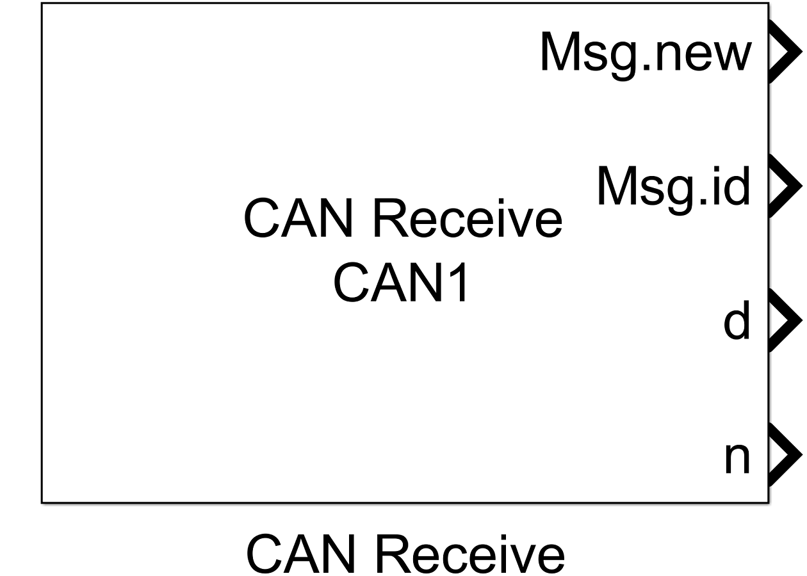
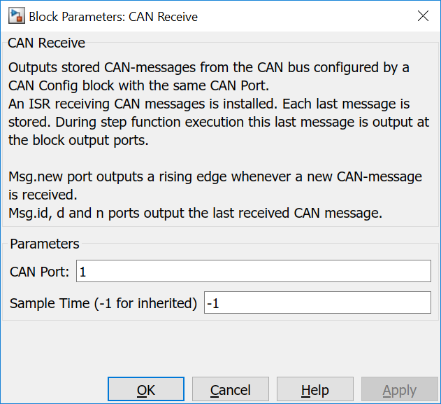

5.5.2. CAN Receive
5.5.2.1. Description
This block reads CAN messages from a CAN instance specified with CAN Port.
At Msg.new output port a rising edge is generated when a new message was received by an ISR. The message ID is output at Msg.id. Message data and length are output at d and n output ports.
{kind=link}
5.5.2.2. Data Type Support
Msg.new port writes values with boolean data type.
Msg.id port writes values with unit16 data type.
d port writes values with uint8 data type.
n port writes values with uint32 data type.
5.5.2.3. Parameters Dialog Box
CAN Port
Specifies an internally used CAN bus number. It is used to generate unique instance names when more CAN busses are included in the same model and to tie config, read and write blocks together.
5.5.2.4. Example
Please see the Examples shown in CAN Config documentation.
5.5.2.5. Code Generation
Instance names of mbed CAN classes are created by concatenating can and <CAN Port> and variable name and <CAN Port> respectively.
Global parts
Declares several variables globally:
char can_buffer1<CAN Port>[]= { 0x00, 0x00, 0x00, 0x00, 0x00, 0x00, 0x00, 0x00 };
uint16_T can_id<CAN Port>= 0;
int can_len<CAN Port>= 1;
int can_new<CAN Port>= -1;
CANMessage can_rcv_msg<CAN Port>;
and creates additionally a global (ISR) function that reads a CAN message whenever a new message arrived and sets the received flag:
void can_rcv_handler<CAN Port>()
{
can<CAN Port>.read(<CAN message>);
can_new<CAN Port>= 1;
}
Initialize Function
Creates a line that registers the above receive function as an ISR which is called whenever a CAN frame received.
can<CAN Port>.attach(&can_rcv_handler<CAN Port>);
Step Function
creates several lines in void <Model Name>_step(void) function
// this part is executed when a new CAN message was received after the subsequent call of the step function
if (can_new<CAN Port> > 0) {
can_len<CAN Port> = can_rcv_msg<CAN Port>.len;
can_id<CAN Port> = can_rcv_msg<CAN Port>.id;
memcpy(can_buffer<CAN Port>, can_rcv_msg<CAN Port>.data, can_rcv_msg<CAN Port>.len);
memcpy(<Addr of Outputbuffer>, can_rcv_msg<CAN Port>.data, can_rcv_msg<CAN Port>.len);
<output port n> = can_rcv_msg<CAN Port>.len;
<output port Msg.id> = can_rcv_msg<CAN Port>.id;
<output port Msg.new> = 1;
can_new<CAN Port> = 0;
// this part is executed when a CAN message was never received
} else if (can_new<CAN Port> < 0) {
memcpy(<Addr of Outputbuffer>, can_buffer<CAN Port>, 1);
<output port n> = 0;
<output port Msg.id> = 0;
<output port Msg.new> = 0;
can_new1 = 0;
// this part is executed when a new CAN message was not received after the last call of the step function
// the last received CAN message is output but without a rising edge at Msg.new output port
} else {
memcpy(<Addr of Outputbuffer>, can_buffer<CAN Port>, can_len<CAN Port>);
<output port n> = can_len<CAN Port>;
<output port Msg.id> = can_id<CAN Port>;
<output port Msg.new> = 0;
}